第4章 プログラミングを始める前に
BeOSでのアプリケーションプログラミングについて、次の章からサンプルを使って具体的に説明します。この章では、その前に必要となる知識について解説しておきます。まずBeOS上で利用できる開発環境を紹介し、次にソースファイルをコンパイルして組み合わせ、アプリケーションを作るまでの手順を説明します。その後、ソースレベルデバッガの使い方を簡単に説明し、最後にC++言語を使ったプログラミングについて、市販の解説書や本書のサンプルで採用している作法を紹介して終わりにします。
1.2節で述べたように、BeOSの殆どのAPIはC++言語で記述されており、アプリケーションのプログラミングもC++言語を使うのが基本となります。本書では、読者が既に基本的なC++プログラミングの知識を持っていることを前提にしていますので、C++でのプログラミングについては特に解説しません。これまでC++でプログラムを書いたことがなく、どのように書けばよいか分からないという人は、4.6節で紹介するC++の解説書を読んでみて参考にして下さい。
4.1 BeOSの開発環境
4.1.1 開発環境とは
BeOSのアプリケーションを作るといっても、C++でプログラムを書けばそれで終わりというわけではありません。2.5節で述べたように、アプリケーションを作るのには次の四つの手順が必要です。なお、ソースファイルやリソースファイルとは何かについて、4.2節で説明します。プログラミングの経験があまりなく、これらの概念に馴染みがない人は、そちらを参考にして下さい。1)ソースファイルやリソースファイルを作る
2)ソースファイルをコンパイルしてオブジェクトファイルを作る
3)オブジェクトファイル同士をリンカで結合して一つのファイルにする
4)リソースファイルの内容をアプリケーションファイルに組み入れる
この手順にしたがって作業を行うのに必要なツール、つまりアプリケーションを開発するためのツールを集めたものを「アプリケーション開発環境」と呼びます。上の手順をみると、開発環境を構成するツールとして、最低限つぎのものが必要なのが分かるでしょう。
a)ソースファイルを作るエディタ
b)リソースファイルを作るエディタ
c)ソースファイルをコンパイルするコンパイラ
d)オブジェクトファイル同士を結合するリンカ
e)リソースファイルをアプリケーションファイルに組み入れるツール
一般的な商用OSの場合、これらの開発ツールはOSのパッケージに含まれておらず、別パッケージとして売られているものを購入しなければならないのが普通です。BeOSでもそれは基本的に同じで、Metrowerks社製の”CodeWarrior for BeOS”という開発環境を購入する必要があります。とはいえ、Windowsなどとは違い、BeOSには販売されている開発環境のデモ版がバンドルされており、サイズの小さなアプリケーションであれば製品版を購入しなくても開発できるという利点があります。
C++で開発を行う場合、デモ版と製品版の違う点は、リンカが生成できる実行ファイルのサイズが、デモ版では64KBまでに制限されていることだけです(注4-1)。64KBというファイルサイズは一見小さ過ぎるように感じられますが、本書に収録したサンプルアプリケーションは全て64KBより小さく、デモ版だけを使って作成できます。これは、BeOSのAPIが共有ライブラリとして提供されているため、アプリケーション本体のファイルサイズが比較的小さくて済むからです。
本書を書くにあたっては、BeOSにバンドルされているCodeWarrior for BeOSのデモ版を使ってサンプルアプリケーションの開発やテストを行いました。したがって、製品版をお持ちでなくとも、本誌に収録したサンプルは問題なく作成できます。とはいえ、本格的にアプリケーション開発を始められる場合には、製品版を購入されることをお勧めします。なお、CodeWarrior for BeOSは国内の販売店で購入できるほか、海外のWebサイトからオンラインで購入することも可能です。国内での販売ついては(株)バイスの「CodeWarriorセンター」(http://www.byse.co.jp/cw/product.html)を、またオンラインでの購入についてはMetrowerks社のWebサイトにあるページ(http://www.metrowerks.com/buy/online.html)をあたってみて下さい。
- (注)4-1
- 製品版には、C++の開発環境に加えてJavaの開発環境が含まれています。また、C++についても製品版ではMetrowerks社によるサンプルコードや、いくつかの追加されたツールが提供されます。
4.1.2 CodeWarrior IDE
開発環境の説明で、アプリケーションを作るにはエディタとコンパイラおよびリンカ、それとリソースファイルの組み入れツールが必要なことを述べました。これらはそれぞれ独立したツールですが、作業の流れの中で互いに連携させて使うことが普通ですので、ばらばらに使うのではなく、一つのアプリケーションを通してまとめて使える方が便利です。CodeWarrior for BeOSでは、このために”BeIDE(Be Intergrated Development Environment)”と呼ぶアプリケーションを提供しています。このアプリケーションを使うと、ソースファイルの編集とコンパイルおよびリンク、そしてリソースファイルの組み入れという一連の作業をすべて行うことができます。
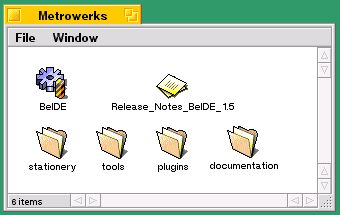
図[4.1] CW for BeIDEのフォルダを撮った画面キャプチャ
BeIDEを使ったアプリケーション作成の具体的な手順は、4.3節で説明します。
4.1.3 シェル端末とmake
上に述べたBeIDE(CodeWarrior IDE)は、アプリケーションの作成作業をGUIベースで行うためのツールです。これに対し、コマンドラインベースで作業を行うためのツールも提供されています。1.2節で述べたように、BeOSではUnixシェル(bash)が動作するシェル端末アプリケーション(Terminal)が提供されていますが、実はCodeWarrior for BeOSのコンパイラとリンカはコマンドラインベースのツールですので、Unixシェルから起動して使うことができるのです。CodeWarrior for BeOSのコンパイラとリンカは、それぞれ“mwcc”と“mwld”というコマンドになっており、シェルのプロンプトからコマンド名を入力すると起動します。先に述べたBeIDEは、ユーザのメニュー選択操作に応じて内部でこれらのツールを起動してコンパイルやリンクを行ってくれるのです。また、リソースファイルの組み入れツールとして“copyres”というシステム付属のコマンドがあり、これもBeIDEが内部で使っています。
BeIDEでは、ソースファイルのコンパイルとリンク、およびリソースファイルの組み入れを一回のメニュー選択操作でできて便利なのに比べ、シェル端末で各々のツールを一々実行するのでは、それだけ操作が面倒になってしまいます。しかし、Unix系OSなどでコマンドラインベースの開発環境を使った経験のある方ならご存じのように、“make”という便利なツールがあり、これを使えばBeIDEと同様、一回の操作で必要な作業を行えます。
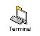
図[4.2] (Terminal)のアイコンを撮った画面のキャプチャ
makeコマンドを使ったアプリケーション作成の具体的な手順は、4.4で説明します。
4.1.4 その他のツール
上に述べたように、CodeWarrior for BeOSを使えば、アプリケーションの作成作業のうちソースファイルの作成とコンパイル、そしてリンクを行うことができます。これ以外の作業を行うツールについて、以下に紹介します。■リソースファイルの作成
アプリケーションのバージョン情報やアイコンなどの標準リソースは、リソースファイルに格納し、これを専用のツール(copyres)でアプリケーションファイルに組み入れます。標準リソースの作成ツールとして、“FileTypes”というアプリケーションがシステムに付属しており、これを使ってリソースファイルを作成します。
なお、標準以外のリソースデータを格納したリソースファイルを作成する場合は、製品版のCodeWarrior for BeOSに付属する“mwbres”というリソースコンパイラを使うと便利です。また、ビューエディタとして次に紹介する“Interface Elements”も、リソースファイルの編集機能を持っています。ただし、本書では標準リソース以外のリソースを扱いませんので、使い方の詳細はそれぞれのツールのマニュアルを参照して下さい。
■ユーザインタフェース画面の作成
WindowsのVisualBasicや、またNEXTSTEPのInterface Builderのように、ウィンドウ上のビュー配置を編集するためのユーザインタフェース画面作成ツール(ビューエディタ)は、開発環境の一部として提供されるのが普通になってきています。MacOS用のCodeWarriorにも、Constructorというビューエディタが付属しています。残念ながら、CodeWarrior for BeOSにはビューエディタが含まれませんが、サードパーティーから提供されているものがいくつかあります。
標準の開発ツールとしてのビューエディタが未だ存在していないこともあって、本書のサンプルではビューエディタを利用しませんが、代表的なものを三つ紹介しますので、興味のある方はご自分で調べてみて下さい:
・AppSketcher
http://www.beatware.com/products/appsketcher/index.html
BeatWare社が開発している、現在のところ最も有望株だと思われるもの。この会社は、“Mail-It”や“Be Studio”など、他にもBeOS用の商用アプリケーションを開発して販売しています。基本的なビューエディタ機能に加え、クラスブラウザや、また実際にアプリケーションを作成しなくても、ユーザインタフェース画面の作成中にテスト動作を行わせる機能を持っているのが特長です。
・Interface Elements
http://w3.datanet.hu/~amezei/IE/
ハンガリーのAttila Mezei氏が開発しているもので、1998年4月時点ではフリーウェアとして提供されています。Mezei氏は、Adamation社が販売している”Audio Elements”というサウンド処理アプリケーションを開発した人でもあります。なお、ビューエディタ機能に加え、文字列や数値データなど、一般的なリソースデータの編集機能も持っているのがInterface Elementsの特長です。
・BeConstruct
http://dewww.epfl.ch/~balleneg/BeOS/BeConstruct.html
フランスのFlorian Ballenger氏が開発しているもので、BeOSのレプリカント機構を応用しているのが特徴です。現時点ではフリーウェアとして提供されています。
■gcc
GNUのCコンパイラ(gcc)は、一種のフリーウェアとして様々なプラットフォームで利用されています。Be社からの公式なサポートはありませんが、Cronusという会社によってBeOSへの移植が進められています。ただし、gccがあればCodeWarrior for BeOSが不要になるというわけではありません。移植されているのはコンパイラだけであり、リンカはCodeWarrior for BeOS付属のもの(mwld)を使う必要があります。また、Metrowerks社製のC++コンパイラ(mwcc)とgccには互換性がないため、mwccで作成されているBeOSの共有ライブラリを呼び出すアプリケーションは、gccを使って作成することができません。したがって、gccはPOSIX APIのみを使ったアプリケーションの作成にしか利用できません。Unix系OSからのアプリケーションの移植にしか使えないと考えた方が無難です。もちろん、大規模なアプリケーションを移植する場合、BeOSに付属している制限版のリンカ(mwld)では対応できないので、その場合もCodeWarrior for BeOSを購入する必要がでてきます。
4.2 アプリケーション作成に必要なファイル
前節で紹介した開発環境を使って実際にアプリケーションを作る手順を説明する前に、アプリケーションを作るために必要なファイルについておさらいしておきましょう。以下に、アプリケーションを作るうえで最低限必要な三種類のファイルを説明します。■ソースファイル
C++やCで書いたプログラムを保存したテキストファイルです。テキストエディタで作成できますから、BeOS付属の“StyledEdit”や“vi”を利用できますが、4.1.2で述べたBeIDEのエディタを使うと便利です。BeIDEでは、C++やCの予約語やコメントを色分けして表示したり、またソースファイル中で定義されている関数を一覧表示し、指定した関数の行に表示をジャンプするといった機能があるからです。
なお、1.2節や本章の冒頭で述べたように、BeOSのAPIは一部を除いて全てC++で記述されており、アプリケーションのプログラミングもC++を使うのが基本になります。2.6節で述べたPOSIXのAPIを使えばC言語だけでプログラミングすることは可能ですが、ユーザインタフェースを備えたアプリケーションや、またBeOSの特長を十分に活かしたアプリケーションを作ることはできません。
■システムのライブラリ
BeOSが提供するAPIの実体を収めたライブラリファイルです。2.2節で説明したように、システムディレクトリ内に置かれています。2.5節では、BeOSのAPIは共有ライブラリとして提供されており、アプリケーションが実行される時にリンクされると書きましたが、これはアプリケーションを作成する時には不要だということではありません。
ソースファイルをコンパイルしてできたオブジェクトファイルを結合する際、リンカはプログラムのAPI呼び出しをチェックし、システムの共有ライブラリで定義されているものと違っている場合にはエラーを発生させます。このため、アプリケーションを作成する時には使用するライブラリファイルを指定する必要があるのです(注4-2)。
■標準リソースファイル
4.1.4で述べたように、アプリケーションのバージョン情報やアイコンなどの標準リソースは、リソースファイルに保存したものをcopyresコマンドによってアプリケーションの作成時に組み入れる必要があります。この標準リソースファイルは、BeOS付属の“FileTypes”というアプリケーションを使って作成します。また、アイコンの作成ツールとして“IconWorld”というアプリケーションも標準で提供されています。
この後の二つの節では、いよいよアプリケーションを作成する手順を具体的に説明します。最初はBeOSの標準開発環境であるBeIDEを使った手順を述べ、その後にシェル端末を使った作成手順を示します。
アプリケーションの作成手順を説明するために、第5章で使うサンプルアプリケーションを例題に利用することにします。5章以降では、各サンプルアプリケーションのプログラミングに関する説明に集中しますので、アプリケーションの作成手順は本章でしか説明しません。一度作成手順を分かってしまえば、あとはどのアプリケーションでも同じ手順で作成できますから、この章の説明をよく読んで理解しておいて下さい。
- (注)4-2
- Intel版では、アプリケーションの実行時にリンクされる共有ライブラリと、リンカによるチェックに使われるライブラリファイルとが異なっています。たとえば、"libbe.so"という共有ライブラリファイルに対し、アプリケーションの作成時のみに使う"libbe.so.LIB"というライブラリファイルが用意されています。
4.3 BeIDEによる開発
この節では、BeIDEを使ったアプリケーションの作成手順を説明します。なお、ここではBeIDEの操作方法について全てを説明することはしません。アプリケーションを作成するための基本手順以外の操作方法については、BeIDEのマニュアルを参照して下さい。また、本書の記述はBeOS Release 3付属のBeIDE(v1.5)に基づいており、それ以降のバージョンに対しては内容に食い違いがある可能性があります。あらかじめご了承下さい。4.3.1 サンプルアプリケーション
まず、アプリケーションの作成手順を説明するのに使うサンプルについて紹介します。このサンプルは5.2.2で説明するもので、下図のようにウィンドウを一枚開くだけの単純なアプリケーションです。
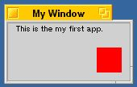
図[4.3] "SimpleApp"の画面キャプチャ
BeIDEを使った作成手順を説明するために、本書の付録に付けたサンプルコード集の"4.3_SampleAppWithIDE"というフォルダに、このアプリケーションのソースファイルだけを収録してあります。フォルダの中に次の7個のファイルがあることを確認して下さい。
SimpleApp.cp
SimpleApp.h
SimpleAppMain.cp
SimpleView.cp
SimpleView.h
SimpleWin.cp
SimpleWin.h
4.2節の説明では、自分で作って用意するファイルとして、ソースファイル以外に標準リソースを保存したリソースファイルが必要だと述べました。説明に使っているサンプルのフォルダにはソースファイルしか用意されていませんので、リソースファイルを作らなければいけません。では、リソースファイルを作りましょう。
4.3.2 リソースファイルの作成
標準リソースのファイルには、“FileTypes”というシステム付属のアプリケーションを使えばよいと4.2節で述べました。以下に、FileTypesを使ってリソースファイルを作る手順を示します。なお、本書執筆時点のBeOSのバージョン(Release 3)では、PowerPC版とIntel版の間でリソースファイルに互換性がなく、共通のファイルを使うことができません。したがって、PowerPC版とIntel版の両方のアプリケーションを作る場合、それぞれ別のリソースファイルを作る必要があります。とはいえ、どちらも作成手順は同じですので、以下の説明を参考にしてそれぞれのリソースファイルを作って下さい。1.) MakeResによる空ファイルの作成
最初に、本書の付録に付けたサンプルコード集の"MyTools"というフォルダに入っている、“MakeRes”というアプリケーションを使って空のリソースファイルを作ります。MakeResのアイコンをダブルクリックして起動すると、ファイル保存用のダイアログが開かれます。
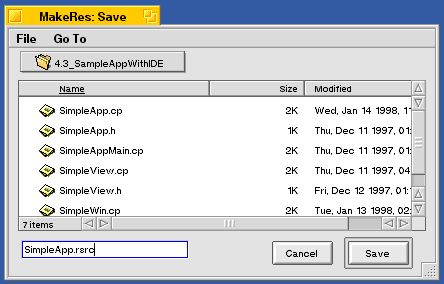
図[4.4] MakeResのセーブダイアログを撮った画面キャプチャ
ダイアログを使って保存先のディレクトリを指定し、適切な名前を入力して保存して下さい。ほんとうはFileTypesだけでリソースファイルを作れれば簡単なのですが、本書執筆時点ではFileTypesにソースファイルを新規作成する機能がないため、補助ツールとしてMakeResを用意しました。
2.) FileTypesの起動
/boot/preferenceフォルダにあるFileTypesのアイコンをダブルクリックして起動します。または、デスクバーのBeメニューから“preferences”を選択し、そこで開かれた階層メニューから“FileTypes”を選択します。下図のウィンドウが開かれますので、そのウィンドウの上に(1)で作った空のリソースファイルのアイコンをドラッグ&ドロップして下さい。
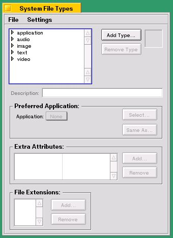
図[4.5] FileTypesのデフォルトウィンドウ
リソースファイルをFileTypesのウィンドウにドラッグ&ドロップすると、図4.6のようなウィンドウが開かれます。このウィンドウを使って、アプリケーションのバージョン情報やシグネチャなどを設定します(注4-3)。
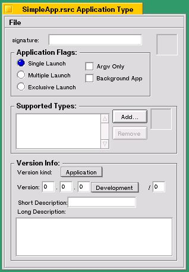
図[4.6] アプリケーションタイプの設定ウィンドウ
3.) アプリケーション情報の設定
図4.6のウィンドウではいくつかの標準リソースを設定することができますが、それぞれについて説明します。
・signature
アプリケーションのシグネチャを設定します。シグネチャはMacOSでいう「クリエータ」に相当するもので、他のアプリケーションと重複しないように設定する必要があります。シグネチャはアプリケーションを識別するMIMEタイプの文字列であり、"application/アプリケーションタイプ"という形式にしなければいけません。Be社では、次の形式にすることを推奨しています。
application/x-vnd.あなたの会社名-アプリケーション名
たとえば、FileTypesアプリケーションの場合には"application/x-vnd.Be-MIMA"に設定されています。個人名義で作っていて会社の名前を使いたくない場合は、たとえば"application/x-vnd.KOGA-SimpleApp"のように自分の名前を使って設定するのもよいでしょう。
・Application Flags
アプリケーションの起動モードを設定します。三種類の起動モードのどれかを選択できるほか、Trackerを使ったユーザインタフェースに対する二種類の指定が可能です。それぞれの項目の指定内容を以下に記します:
◇Single Launch
そのアプリケーションに対して、同時に一つのプロセスしか起動しないことを指定します。ただし、このモードでは実行ファイル(アプリケーションファイル)をベースとしたチェックが行われますので、実行ファイルをコピーして起動すれば、コピーしたファイルの数だけ同じアプリケーションのプロセスを起動できます。デフォルトの起動モードです。
◇Multiple Launch
そのアプリケーションに対して、同時に任意個数のプロセスを起動できることを指定します。
◇Exclusive Launch
Single Launchと同様、同時に一つのプロセスしか起動できないことを指定します。ただし、このモードではアプリケーションのシグネチャを使ってチェックが行われますので、たとえ実行ファイルをコピーしても一つのプロセスしか動かせません。何らかの事情で、同時に同じアプリケーションのプロセスを動かすと深刻な問題を起こすような場合に指定するとよいでしょう。
以上の三つは起動モードを選択するものであり、どれか一つしか選択できません。次の二つは、これらの起動モードと組み合わせて使う設定項目です。
◇Argv Only
POSIX APIだけを使う場合など、BeOS固有のAPIを使わないアプリケーションであることを指定します。BeOS固有のAPIを利用する場合、アプリケーションでは必ずBApplicationクラスのインスタンスを生成しなければいけませんが、そのようなアプリケーションに対して"Argv Only"を設定すると、起動した時にエラーとなり、アプリケーションが強制終了されます。
◇Background App
ウィンドウを開かない、つまりGUIを持たないアプリケーションであることを指定します。この指定をされたアプリケーションは、起動してもデスクバーのBeメニューに表示されません。なお、実際にはウィンドウを開くことがあるアプリケーションであっても"Background App"に設定することが可能です。システムに常駐してバックグラウンドで動き、いったん起動したらシステムが停止するまで終了させたくないようなアプリケーションの場合に使うとよいでしょう。2.3節で説明したサーバモジュールは、app_server以外は全てこの指定がされています。
・Supported Types
アプリケーションのアイコンにドラッグ&ドロップできるファイルのタイプを設定します。ここで設定した内容は、3.4節で説明した「ファイルタイプデータベース」に記録され、ファイルとアプリケーションの関係づけに使われます。つまり、たとえば“text/plain”というファイルタイプを追加しておけば、プレーンテキストのファイルをアプリケーションのアイコンにドラッグ&ドロップして開かせることができますし、“FileTypes”プリファレンスを使って、プレーンテキストのファイルに対するデフォルトアプリケーション("preferred app")に設定することも可能になります。デフォルトアプリケーションに設定した場合、そのファイルのアイコンをダブルクリックすると、ファイルアイコンをドラッグ&ドロップした時と同様、自動的にアプリケーションが起動されます。テキストエディタや画像ソフトなど、ファイルを扱うアプリケーションの場合には設定すべきリソース項目です。
なお、ファイルアイコンをアプリケーションのアイコンにドラッグ&ドロップしたり、またファイルアイコンをダブルクリックした場合、ファイルを開くように通知するメッセージがTrackerからアプリケーションに送られます。したがって、アプリケーション側ではそのメッセージに応答できるようにプログラミングしておく必要があります。
・Version Info
アプリケーションのバージョン情報を設定します。三種類ある入力フィールドのうち、"Long Description:"に記録した文字列は、Trackerで“File”→“Get Info”メニューを選択して開かれる情報パネルで使われます。
4.) アイコンの設定
アプリケーションのアイコンを設定するには、システム付属のアイコンエディタ(“Icon World”)を使ってアイコンを作成し、これをコピー&ペーストでウィンドウのアイコン設定部品に貼り付けます。"signature:"の入力フィールドの右隣にあるのと、"Supported Types"ボックスの中の右端にあるのがそうですが、これらをクリックして強調表示の状態にすると、システムのクリップボードからアイコンをペーストできるようになります。
ここで、"signature:"フィールドの右隣にあるアイコン設定部品は、アプリケーションのアイコンを設定するもので、"Supported Types"ボックスの中にあるのはドキュメントアイコン、つまりデータファイルに対するアイコンです。3.4節で説明したファイルタイプデータベースには、ファイルとアプリケーションの関係づけに加え、ファイルのアイコン情報が記録されています。Trackerは、ファイルタイプデータベースを調べてそれぞれのファイルタイプに対応するアイコンを取得し、表示に使います。たとえば、プレーンテキストファイル、すなわちファイルタイプが“text/plain”であるファイルを表示する場合、まずデフォルトアプリケーションに設定されているアプリケーションを調べます。次に、そのアプリケーションが“text/plain”タイプに対して割り当てているアイコンを取得し、それを表示するのです。
なお、Icon Worldの使い方についてはシステム付属のマニュアル(BeOS User's Guide)を参照して下さい。Icon Worldを起動するとアイコン作成用のビットマップエディタ・ウィンドウが開かれますので、それを使ってアイコンを作成します。
5.) リソースファイルとして保存
必要な設定入力が終わったら、それをリソースファイルに保存します。ウィンドウの“File”メニューから“Save”を選択して下さい。または、Command(またはAlt) + S キーを押して保存することもできます。
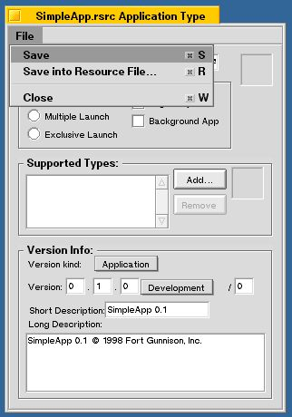
図[4.7] リソースファイルの保存
ソースファイルとリソースファイルを用意できたら、プロジェクトファイルを作ってコンパイラやリンカを起動するのに必要な設定を行います。次は、この手順を説明しましょう。
- (注)4-3
- アプリケーション情報を設定するウィンドウは、空のリソースファイルのアイコンをダブルクリックしてFileTypesを起動しても開くことができます。
4.3.3 プロジェクトファイルの作成とファイルの登録
BeIDEでは、プロジェクトと呼ぶファイルを作り、これにソースファイルやリソースファイルを登録して必要な作業を行います。以下に、プロジェクトファイルを作ってアプリケーションの作成に必要なファイルを登録するまでの手順を示します。1.) BeIDEの起動
/boot/apps/Metrowerks/BeIDEのアイコンをダブルクリックして起動します。または、デスクバーのBeメニューから“apps”を選択し、そこで開かれた階層メニューから“Metrowerks” → “BeIDE”と選んでも起動できます。BeIDEが起動すると、空のドキュメントウィンドウが開かれます。
2.) プロジェクトファイルの新規作成と保存
プロジェクトファイルを新規作成するには、ドキュメントウィンドウの“File”メニューから“New Project”を選択します。そうすると、“New Project”というタイトルのウィンドウが開かれます。このウィンドウでは、テンプレート(ステーショナリ)を指定してプロジェクトを新規作成することができます。ステーショナリとして、“C_C++”から“x86 C++ BeApp”または“ppc C++ BeApp”を選択し、“Create”ボタンをクリックしてプロジェクトを作成して下さい。なお、Intel版のBeOSを使っている場合には“x86 C++ BeApp”を指定し、PowerPC版の場合には“ppc C++ BeApp”を指定します。図4.8はIntel版での様子を撮ったものですが、図のように、どちらか一方しか表示されないので間違うことはないはずです。また、“Create Folder”というラベルの付いたチェックボックスはオフにして下さい。オンにした状態でプロジェクトを作成すると自動的にフォルダが作成されますが、ここの例ではフォルダを作らないようにします。
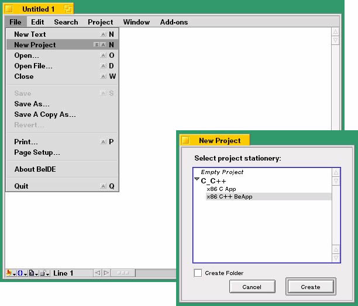
図4.8-1→“New Project”メニューの選択図[4.8] プロジェクトの新規作成画面
図4.8-2→プロジェクトの新規作成ウィンドウ
プロジェクトの新規作成ウィンドウで“Create”ボタンをクリックすると、プロジェクトファイルの作成先を指定するための保存用ダイアログが開かれます。保存するディレクトリをダイアログで指定し、プロジェクトファイルに適切な名前を付けて保存して下さい。
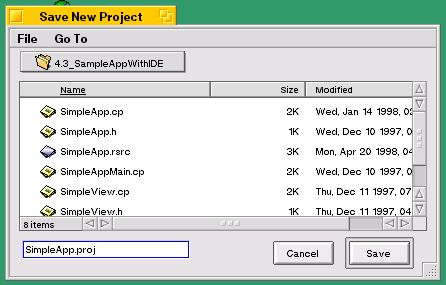
図[4.9] 新規プロジェクトの保存画面
プロジェクトファイルを保存すると、プロジェクトウィンドウが開かれます。選択したステーショナリには“HelloWorld.c”というソースファイルが登録されており、プロジェクトファイルと同じディレクトリ(フォルダ)にコピーされます。このファイルは要らないので、捨ててしまって下さい。また、“(Objects)”という名前のフォルダが自動的に作られますが、このフォルダは、ソースファイルをコンパイルしてできるオブジェクトファイルを格納するためのものです。こちらは捨てないようにして下さい。
3.) ファイルの登録
プロジェクトファイルに名前を付けて保存したら、次はソースファイルやリソースファイルをプロジェクトに登録します。システムのライブラリは、最低限必要なものがあらかじめ登録されていますが、アプリケーションによっては別のライブラリを追加登録する必要があります。この説明で使っているサンプル(SimpleApp)では、ライブラリを追加登録する必要はありません。なお、図4.10～図4.12はすべてIntel版での様子を撮ったものですので、登録されているシステムのライブラリファイルがPowerPC版と違います。
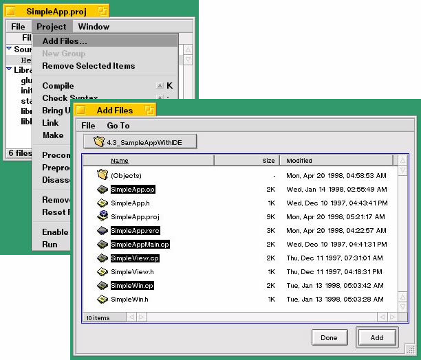
図4.10-1→“Add Files...”メニューの選択図[4.10] ファイルの登録画面
図4.10-2→ファイル登録用のオープンダイアログ
プロジェクトにファイルを登録するには、上図のようにプロジェクトウィンドウの“Project”メニューから“Add Files...”を選択して下さい。オープンダイアログが開かれますので、登録するファイルをShift+クリックですべて選択し、それから“Add”ボタンをクリックするとプロジェクトに登録されます。または、Trackerのフォルダウィンドウからファイルのアイコンをプロジェクトウィンドウにドラッグ&ドロップして登録することもできます。登録するファイルは、.cpという拡張子のついたC++のソースファイルと、4.3.2で作ったリソースファイルです。.hという拡張子のファイルはC++のクラス定義や定数定義を記述したヘッダファイル(インタフェースファイル)ですが、これは登録する必要はありません。
間違って不要なファイルを登録した場合は、そのファイルをプロジェクトウィンドウのリストから選択し、“Project”メニューの“Remove Selected Items”を選んで削除します。ステーショナリに含まれていた“HelloWorld.cp”は不要ですから、この手順で削除して下さい。
4.) グループの作成と名前の変更
プロジェクトに登録したファイルは、グループに分けて管理することができます。各グループは、プロジェクトウィンドウの中にアウトラインリスト形式で表示されますので、必要なグループの内容だけを表示させると見やすくなります。“Project”メニューから“New Group”を選択すると、新しいグループを追加できます。
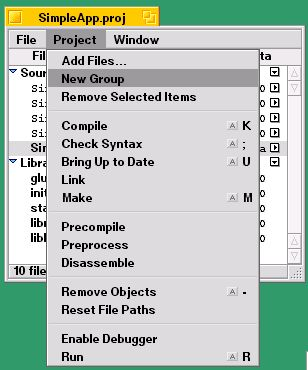
図[4.11] グループの追加画面
グループを作成すると、アウトラインリスト上で選択されているファイルとその後に並んでいるファイルが、自動的に作成したグループへ移動します。したがって、作成するグループに所属させたいファイルを選択し、それからグループ作成を行うようにして下さい。グループを作った後で他のグループからファイルを移す場合は、移したいファイルのリスト項目をドラッグ&ドロップします。また、グループの並び順を入れ替えたい場合も、同様にグループのリスト項目をドラッグ&ドロップして移動できます。
グループを新規作成しただけでは、どれも“New Group”という名前になってしまいますので、適切に名前を変更して下さい。グループの名前を変更するときは、グループのリスト項目をダブルクリックします。グループ名を設定するダイアログが開かれますので、好きな名前を入力して“OK”ボタンをクリックすれば、グループ名が入力したものに変わります。
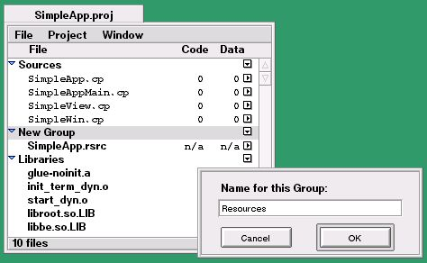
図[4.12] グループ名の変更画面
必要なファイルをプロジェクトに登録したら、後はコンパイルとリンクを実行すればアプリケーションのでき上がりです。しかし、その前に設定しておくと良いパラメータがいくつかありますので、これについて次に説明します。
4.3.4 プロジェクトのパラメータ設定
ここでは、プロジェクトに対して設定できるパラメータのうち主なものを項目ごとに述べます。プロジェクトのパラメータは、実際にはコンパイラやリンカに対するオプション指定として使われます。4.4節では、シェル端末(Terminal)を使ってアプリケーションを作成する手順を説明しますが、そこではコンパイラやリンカに対して直接オプション指定を行いますので、興味がある人はBeIDEを使った場合と比べてみて下さい。プロジェクトのパラメータを設定するには、プロジェクトウィンドウの“Window”メニューから“Settings”を選択して下さい。“Settings”というタイトルのウィンドウが開かれます。このウィンドウの左隅に、設定する項目を並べたアウトライン形式のリストがありますので、設定したい項目を選択して下さい。選択した項目に応じて、リストの右側に表示される内容が変化します。なお、このウィンドウの上端には“Apply To”というラベルのポップアップメニューがあります。このメニューは、設定内容をプロジェクトに反映させるやり方を切り替えるものです。メニュー項目の“Current Project”が選択されている場合、現在開いているプロジェクトの設定だけが変更されます。一方、“New Project”が選択されていると、今後作成するすべてのプロジェクトに対して設定内容が反映されます。以下の手順では“Current Project”が選択された状態にしておいて下さい。また、以下に述べる各設定項目ごとに、入力が終わったらウィンドウの右下隅にある“Save”ボタンをクリックして入力内容を保存することが必要です。
■アプリケーションの名前
リストの“Project”から“PPC Project”または“x86 Project”を選んで下さい。PowerPC版のBeOSを使っている場合は“PPC Project”を、Intel版の場合は“x86 Project”を選びます。右側に表示された“Application Info”ボックスの中にある“File Name”というラベルの入力フィールドに、アプリケーションの名前を入力します。このフィールドは、リンカが生成するアプリケーションファイルの名前を設定するものです。
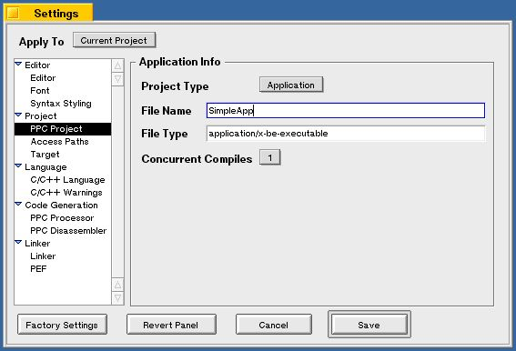
図[4.13] (A) PPC Projectの設定画面
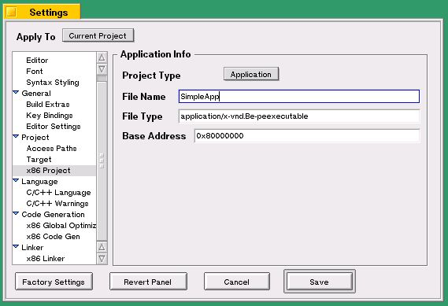
図[4.13] (B) x86 Projectの設定画面
■コンパイラの警告オプション
リストの“Language”から“C/C++ Warnings”を選びます。右側に表示された“Warnings Info”ボックスの中にあるチェックボックスのうち、対象とする警告の内容を示すもの全てをオンにして下さい。これにより、アプリケーションの実行エラーの原因となる可能性のある箇所を、コンパイル段階で見つけるのが簡単になります。
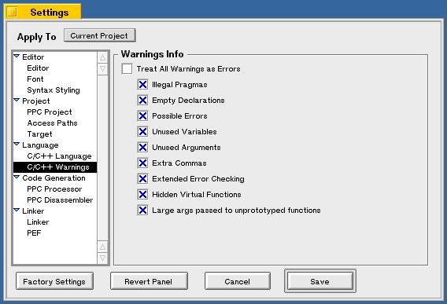
図[4.14] C/C++ Warningsの設定画面
■コンパイラの最適化オプション
コンパイラの最適化オプションを設定するときは、リストの“Code Generation”にある項目を選びます。ただし、最適化オプションは通常デフォルト設定のままで十分ですし、不用意にオプションを指定するとアプリケーションが正しく動かなくなってしまう場合もありますので、ここではそれぞれのオプションの内容を説明することはしません。最適化オプションの内容を理解するには、コンパイラの動作やCPUの命令セットに関する知識が必要です。デフォルト以外の最適化を行う場合は、コンパイラのマニュアルをよく読み、その内容を十分理解したうえで行って下さい。
最適化オプションの内容はCPUの種類によって異なるため、PowerPC版とIntel版とでは表示される内容が異なります。図4.15に、PowerPC版とIntel版の設定画面を示します。
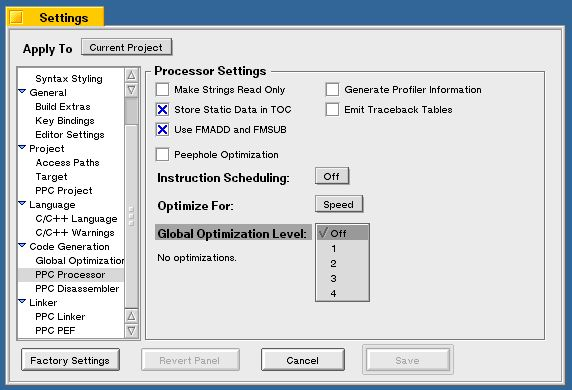
図[4.15] (A) 最適化オプションの設定(PPC版)
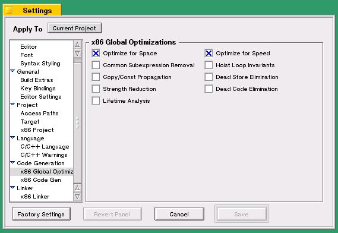
図[4.15] (B) 最適化オプションの設定(Intel版)
■デバッグオプション
4.5節で説明するソースレベルデバッガを使ったデバッグ作業を行うには、デバッグ用のシンボルファイルを生成する必要があります。シンボルファイルを生成するかどうかを指定するには、リストの“Linker”から“PPC Linker”または“x86 Linker”を選んで下さい。右側に表示された“Link Options”ボックスの中にあるチェックボックスのうち、一番上にある“Generate SYM File”をオンにすると、リンカがシンボルファイルを生成するようになります。
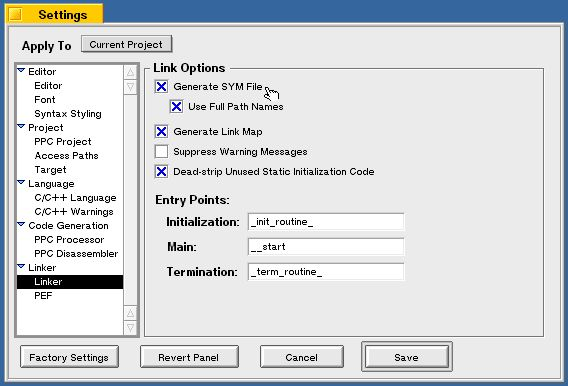
図[4.16] (A) Linkerの設定画面(PPC版)
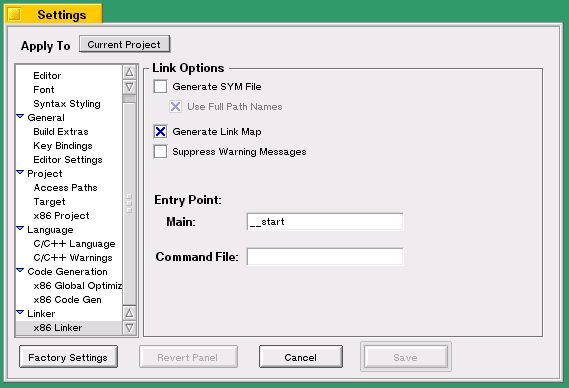
図[4.16] (B) Linkerの設定画面(Intel版)
ただし、本書執筆時点のバージョンのBeOS(Release 3)では、Intel版でソースレベルデバッガを利用することができません。これについては、4.5節で説明します。
■プリコンパイルヘッダ
CodeWarrior for BeOSでは、コンパイル処理を高速化するために「プリコンパイルヘッダ」と呼ばれる特殊なファイルを利用することができます。これは、ヘッダファイルの内容を解析し、コンパイラが内部で使用する形式に変換したものを保存したファイルです。プリコンパイルヘッダを用いない場合、コンパイラはソースファイルからインクルードされているヘッダファイルの内容をコンパイル時に読み取って解析しなければならないため、それだけコンパイル時間が長くなります。
プリコンパイルヘッダを使うと、コンパイル時にヘッダファイルを解析する必要がないため、それだけコンパイルに要する時間を短縮できるのです。ただし、便利なプリコンパイルヘッダにも欠点が一つあります。プリコンパイルするヘッダファイルの中に#define文によるマクロを利用した別のマクロが定義されていた場合、マクロの展開結果がプリコンパイル時に決定されてしまうため、ソースファイルの中で#define文を使ってマクロの値を設定しても、それが反映されないのです。この問題に対処するため、通常はマクロの値ごとにプリコンパイルヘッダを用意し、どれを使うのかをパラメータとして設定します。
プロジェクトで使用するプリコンパイルヘッダを指定するには、リストの“Language”から“C/C++ Language”を選んで下さい。右側に表示された“Language Settings”ボックスの中で一番下に“Prefix File”というラベルの入力フィールドがありますが、これがプリコンパイルヘッダのファイル名を設定するものです。本書の付録に付けたサンプルコード集の“Tools”フォルダには、BeOSのSupport Kitで提供されているデバッグ用の条件付きマクロに対し、これを有効にしたプリコンパイルヘッダを作成する手順を書いたドキュメントを収録しています。CodeWarrior for BeOSのマニュアルと合わせて読んでみて下さい。
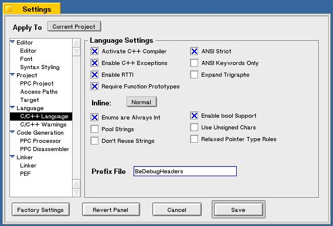
図[4.17] C/C++ Languageの設定画面
プロジェクトのパラメータ設定が済んだら、いよいよコンパイルとリンクを実行してアプリケーションを作ります。次は、この手順を説明します。
4.3.5 makeコマンドの実行
プロジェクトに登録したファイルを使ってアプリケーションを作成するには、プロジェクトウィンドウの“Project”メニューから“Make”を選んで下さい。ソースファイルがコンパイルされた後、オブジェクトファイルを結合してアプリケーションファイルが作られ、それにリソースファイルが組み入れられます。下図は、BeIDEがソースファイルをコンパイルしている様子を撮ったスクリーンショットです。
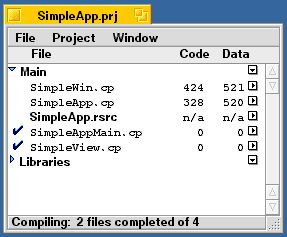
図[4.18] コンパイル中のプロジェクトウィンドウ
ソースファイルに間違いがあり、コンパイルエラーが起きた場合には、それを知らせるメッセージウィンドウが開かれます。このウィンドウはBeIDEのエディタと連動しており、それぞれのメッセージ部分をダブルクリックすると、エラーを起こしたソースファイルをエディタが開き、該当箇所が表示されます。エラーの原因が分かったら、ソースコードを修正して保存し、再度Makeコマンドを実行すれば作業を再開できます。
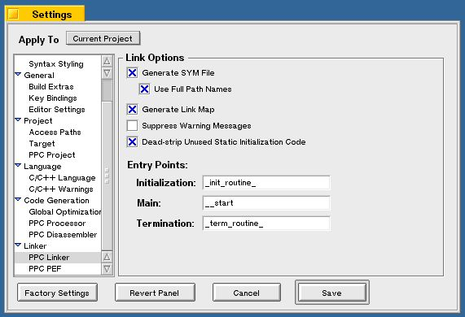
図[4.19] コンパイルエラーを表示したメッセージウィンドウ
実は、この章の説明に使ったサンプル、つまり本書の付録に付けたサンプルコード集の“4.3_SampleAppWithIDE”フォルダに入っているソースファイルには、わざと間違えた箇所があり、コンパイルすると上図のエラーを起こします。図のメッセージを見ると、どうやら“windwObj”という名前の変数が未定義になっているようです。練習問題として、実際にコンパイル作業を行ってエラーメッセージを表示させ、ソースコードの間違いを修正してみて下さい。
無事コンパイルとリンクが終わったら、アプリケーションファイルが生成されてプロジェクトファイルと同じフォルダに現われます。できたアプリケーションを起動して、問題なく動くかどうか確認してみて下さい。また、4.3.2で説明した標準リソースの内容を変えて作成し直し、設定の違いによってどうアプリケーションの動きが変わるか実験してみるのもよいでしょう。
以上で、BeIDEを使ったアプリケーションの作成手順の説明を終わります。次の節では、シェル端末(Terminal)とmakeユーティリティを使った場合の手順を示します。
4.4 Terminalとmakeを使った開発
この節では、シェル端末(Terminal)とmakeユーティリティを使ったアプリケーションの作成手順を説明します。なお、ここではCodeWarrior for BeOSのコンパイラとリンカや、またmakeユーティリティの使用方法について全てを説明することはしません。アプリケーションを作成するための基本手順以外のことについては、CodeWarrior for BeOSのマニュアルや、またBeOS付属のオンラインマニュアルを参照して下さい。また、本書の記述はBeOS Release 3付属のCodeWarrior for BeOSに基づいており、それ以降のバージョンに対しては内容に食い違いがある可能性があります。あらかじめご了承下さい。さて、Unix系OSなどでコマンドラインベースの開発環境を使った経験のある方なら、makeユーティリティを使った開発手順については良くご存じだと思います。また、そのような経験のない方は前の節で説明したBeIDEを利用されるでしょうから、ここでわざわざmakeユーティリティを使った手順を説明することは無駄だと思われるかも知れません。しかし、Unix系OSと同じようにmakeユーティリティを使うといっても、BeOSの場合に注意しなければいけないことがあります。また、makeユーティリティにはBeIDEにはない便利さもあるのです。たとえば、BeIDEのプロジェクトファイルはPowerPC版とIntel版の間で互換性がないため、二つのアプリケーションを作る場合に同じプロジェクトファイルを共通に使うことはできません。しかし、makeユーティリティの場合にはそれができるのです。このような理由から、makeユーティリティを使った開発手順を説明した節を用意しました。
なお、Unix系のOSのアプリケーション、特にBSD系のソースを移植する場合、BeOS付属のmakeユーティリティは振る舞いが一部異なるため、そのままでは移植できない場合があります。その場合、"BSD make"というmakeユーティリティがBeWareとして公開されていますので、それを利用するとよいでしょう。
4.4.1 サンプルアプリケーション
アプリケーションの作成手順を説明するのに使うサンプルは、前節と同じものです。4.3節をとばして読んだ人は、4.3.1に目を通してみて下さい。なお、Terminalとmakeユーティリティを使った作成手順を説明するために、BeIDE用のものとは別のフォルダを付録のサンプルコード集に用意しています。“4.4_SampleAppWithTerminal”というフォルダに、このアプリケーションのソースファイルだけを収録してあります。フォルダの中に次の7個のファイルがあることを確認して下さい。SimpleApp.cp
SimpleApp.h
SimpleAppMain.cp
SimpleView.cp
SimpleView.h
SimpleWin.cp
SimpleWin.h
4.4.2 リソースファイルの作成
リソースファイルの作成手順は、BeIDEを使って作業する場合と同じですのでここには書きません。4.3節をとばして読んだ人は、4.3.2の説明を読んでリソースファイルを作って下さい。なお、この後の説明で述べますが、リソースファイルは“アプリケーション名.rsrc”という形式で作っておくと便利です。
4.4.3 Makefileの作成とファイルの登録
makeユーティリティでは、“Makefile”という名前のテキストファイルを作り、これにソースファイルやリソースファイルを登録して必要な作業を行います。以下に、Makefileを作ってアプリケーションの作成に必要なファイルを登録するまでの手順を示します。1.) Makefileの雛型
Makefileには、作成しようとするアプリケーションファイルについて、作成に必要なファイルの依存関係と作成方法を記述します[1]。本書ではMakefileの記述形式について解説することはせず、代わりに必要な部分をあらかじめ書き入れた雛型を使って手順を説明します。Makefileの記述形式については、章末に挙げた参考文献などを参照して下さい(注4-4)。
リスト4-1は、Makefileの雛型ファイルの内容を示したものです。
[リスト4.1] _template.Makefileの内容
#
# app makefile (template)
#
# Copyright (C) 1994 Be Inc. All Rights Reserved
#
# Modified by koga@ftgun.co.jp ('98. 4/20)
# (for PowerPC app)
#
CC = mwcc
LD = mwld
APP_NAME = <Your_App_Name>
TARGET = $(APP_NAME)
RESOURCE = $(APP_NAME).rsrc
PREFIX = /boot/develop/headers/be/precompiled/BeHeadersPPC
#PREFIX = /boot/develop/headers/be/precompiled/BeDebugHeadersPPC
#
# 注意:これはPPC版用のMakefileテンプレートです。Intel版用では、プリコンパイルヘッダの末尾が
# "PPC"ではなく"x86"となります。
#
CFLAGS = -w all -opt speed -prefix $(PREFIX) -c
LDFLAGS =
#CFLAGS = -g -w all -opt speed -prefix $(PREFIX) -c # for debugging
#LDFLAGS = -sym on # for debugging
OBJS = \
<Your_Object_File1>\
<Your_Object_Filen>
$(TARGET): $(OBJS) $(RESOURCE)
$(LD) -o $@ $(OBJS) -map $@.xMAP $(LDFLAGS)
copyres $(RESOURCE) $@
mimeset -f $@
clean:
rm -f $(APP_NAME) *.o *.xSYM *.xMAP
.SUFFIXES: .o .cpp .cp .c
.cpp.o:
$(CC) -o $@ $(CFLAGS) $<
.cp.o:
$(CC) -o $@ $(CFLAGS) $<
.c.o:
$(CC) -o $@ $(CFLAGS) $<
#
# End of File
#
雛型ファイルの内容について簡単に説明しておきます。まず、先頭部分の'#'で始まっている行は、コメントです。このファイルは、BeOS付属のサンプルコードに付いていたものを筆者が一部改変したものであるため、Be社のコピーライト表示を残しています。その後に、“CC = mwcc”のような形式の行が8行ほど続いていますが、これは後の行で使うパラメータの設定です。ちなみに、“CC = mwcc”というのはコンパイラとしてmwccを使うという指定を意味します。
パラメータ設定行の下に、“OBJS = \”で始まっている行がありますが、これはアプリケーションファイルを作る際に必要なオブジェクトファイルの一覧を指定する部分です。オブジェクトファイルの一覧は、ファイル名をスペースで区切って与えますが、そのまま並べたのでは読みづらくなるため、ここでは'\'(バックスラッシュ)を使って改行して記入しています。こうしておくと、makeユーティリティがMakefileを読み込んだ時にバックスラッシュの後の改行文字が無視され、各オブジェクトファイル名を一行に並べて書いたのと同じことになります。
注意!Makefileを作る場合のよくある間違いとして、バックスラッシュを使って改行記入を行ったときに、最後の行にもバックスラッシュを付けてしまうというのがあります。最後の行の行末にバックスラッシュを付けると、その次の行もつなげて読み込まれてしまうため、makeユーティリティがエラーを起こす場合があります。雛型ファイルの例の通り、オブジェクトファイルを一覧指定する部分の最後の行にだけはバックスラッシュを付けないで下さい。それとは逆に、途中の行にバックスラッシュを付け忘れてもエラーとなりますので注意して下さい。
オブジェクトファイルを一覧指定する部分の下には、“$(TARGET): $(OBJS) $(RESOURCE)”という行で始まっている部分があります。これが最も中心となるところで、オブジェクトファイルとリソースファイルを結合し、アプリケーションファイルを作成するためのコマンド実行手順を並べたものです。二番目の行では“LD”というパラメータにセットされたリンカ(mwld)を使ってオブジェクトファイルを結合し、“TARGET”というパラメータで指定される名前のファイルを生成するよう指示しています。その次の行では、“RESOURCE”というパラメータにセットされたリソースファイルを、copyresコマンドでアプリケーションファイルに組み入れるという指示です。最後の行では、mimesetというコマンドでアプリケーションのファイルタイプ情報をシステムに通知し、ファイルタイプデータベースに登録しています。このコマンドを実行することにより、リソースファイルから組み入れられたアイコンがTrackerのウィンドウに表示されるようになります。
その次の“clean:”という行で始まる二行は、コンパイラやリンカが生成したファイルを削除し、makeユーティリティを使う前の状態、つまりソースファイルとMakefileだけが置かれた状態にするための指示を書いたものです。シェル端末のプロンプトに対し、
% make clean
と入力して“clean”という引数つきで実行すると、この指示に従った処理が行われます。
残りの部分は、ソースファイルをオブジェクトファイルに変換するために必要な、コンパイラに対する指示を記述したものです。“.cpp”、“.cp”、“.c”という拡張子のついたファイルは、ソースファイルとしてコンパイラに与えられ、“.o”という拡張子のオブジェクトファイルに変換されます。
2.) ファイルの登録
4.2節で述べたファイルのうち、ソースファイルと標準リソースファイルはMakefileにパラメータとして記入します。まず、標準リソースファイルは“RESOURCE”というパラメータにセットします。リスト4-1では、このパラメータはアプリケーション名をセットする“APP_NAME”というパラメータを使って値をセットしています。つまり、“アプリケーション名.rsrc”という形式の名前でリソースファイルを作れば、この部分を書き換える必要はありません。それとは違った名前のリソースファイルを使う場合には、“$(APP_NAME).rsrc”と書かれたところを実際のリソースファイル名に書き換えて下さい。
リソースファイルの次はソースファイルの登録です。ソースファイルを登録するには、オブジェクトファイルを一覧指定する部分を書き換えます。各ソースファイルに対して、ファイル名の拡張子(サンプルでは“.cp”)を“.o”で置き換えたものを記入します。説明に使っているサンプル、つまり付録に付けたサンプルコード集の“4.4_SampleAppWithTerminal”フォルダにあるソースの場合は、リスト4-2のようになる筈です。
[リスト4.1] _template.Makefileの内容
#
# app makefile (template)
#
# Copyright (C) 1994 Be Inc. All Rights Reserved
#
# Modified by koga@ftgun.co.jp ('98. 4/20)
# (for PowerPC app)
#
CC = mwcc
LD = mwld
APP_NAME = <Your_App_Name>
TARGET = $(APP_NAME)
RESOURCE = $(APP_NAME).rsrc
PREFIX = /boot/develop/headers/be/precompiled/BeHeadersPPC
#PREFIX = /boot/develop/headers/be/precompiled/BeDebugHeadersPPC
#
# 注意:これはPPC版用のMakefileテンプレートです。Intel版用では、プリコンパイルヘッダの末尾が
# "PPC"ではなく"x86"となります。
#
CFLAGS = -w all -opt speed -prefix $(PREFIX) -c
LDFLAGS =
#CFLAGS = -g -w all -opt speed -prefix $(PREFIX) -c # for debugging
#LDFLAGS = -sym on # for debugging
OBJS = \
<Your_Object_File1>\
<Your_Object_Filen>
$(TARGET): $(OBJS) $(RESOURCE)
$(LD) -o $@ $(OBJS) -map $@.xMAP $(LDFLAGS)
copyres $(RESOURCE) $@
mimeset -f $@
clean:
rm -f $(APP_NAME) *.o *.xSYM *.xMAP
.SUFFIXES: .o .cpp .cp .c
.cpp.o:
$(CC) -o $@ $(CFLAGS) $<
.cp.o:
$(CC) -o $@ $(CFLAGS) $<
.c.o:
$(CC) -o $@ $(CFLAGS) $<
#
# End of File
#
SimpleApp.o\
SimpleAppMain.o\
SimpleView.o\
SimpleWin.o
ソースファイルの名前を書かなくても、Makefileに記述されたオブジェクトファイルへの変換指示によって対応するソースファイル名が自動的に割り出され、コンパイルが実行されます。これがmakeユーティリティの面白いところでしょう。
BeIDEを使った場合と違い、makeユーティリティではMakefileの内容を見れば、どのようなツールを組み合わせて使っているのかが一目瞭然です。次は、コンパイラとリンカに対するオプションの指定について説明します。なお、BeIDEを使った場合と違い、システムのライブラリファイルを登録した箇所がありません。これは、あらかじめデフォルトで全てのシステムライブラリファイルがリンカに渡されるように設定されているため、個々のプロジェクトでは特に設定する必要がないためです。
- (注)4-4
- Makefileの雛型ファイル(テンプレート)は、付録に付けたサンプルコード集の“Templates”というフォルダに収録しています。リソーファイルのテンプレートと合わせ、利用してみて下さい。
4.4.4 コンパイラとリンカに対するオプション設定
ここでは、コンパイラやリンカに対して指定可能なオプションのうち、主なものを項目ごとに述べます。4.4.3で説明したMakefileの雛型では、これらのオプションをパラメータとして記述していますので、オプションの指定内容を変更するのが比較的簡単になっています。■アプリケーションの名前
Makefileのパラメータ設定で、“APP_NAME”の値がアプリケーションの名前になります。雛型ファイルでは“
■コンパイラの警告オプション
Makefileのパラメータ設定で、“CFLAGS”の値がコンパイラに与えるオプション引数になります。雛型ファイルでいうと、“CFLAGS”の値としてセットされている文字列のうち、“-w all”というのが警告対象を指定するオプションです。
■コンパイラの最適化オプション
Makefileの雛型ファイルでいうと、“CFLAGS”の値としてセットされている文字列のうち、“-opt speed”というのが最適化レベルを指定するオプションです。この指定だけでは特に最適化は行われませんが、BeIDEでのデフォルト設定に合わせたものです。なお、前節のBeIDEに関する説明で述べたように、本書では最適化オプションの内容について説明することはしません。最適化オプションの詳細については、CodeWarrior for BeOSのマニュアルを参照して下さい。
■デバッグオプション
デバッグ用のシンボルファイルを生成するには、リンカとコンパイラの両方に対してオプション引数を与える必要があります。リンカに対するオプションは”-sym on”で、これを与えるとアプリケーションファイルと一緒にシンボルファイルを生成します。4.5節で説明するように、このシンボルファイルはソースレベルデバッガが利用するものです。
一方、コンパイラに対するデバッグオプションは“-g”で、これを与えるとコンパイル時にデバッグ用のシンボル情報を生成し、オブジェクトファイルの中に埋め込んでくれます。このシンボル情報は、オブジェクトファイルを結合する際にリンカによって抜き出され、シンボルファイルに書き込まれます。したがって、コンパイラに対してもデバッグオプションを指定しておかないと、リンカにシンボルファイルを生成させただけではソースレベルのデバッグを行えませんので注意して下さい。
Makefileのパラメータのうち、リンカに対するオプション引数をセットするのは“LDFLAGS”です。リスト4-1の雛型ファイルを見ると“CFLAGS”と“LDFLAGS”の値をセットする行が二組ならべて書かれており、一方の組がコメントアウトされています。雛型ではデバッグオプションをオフにした状態になっていますので、これをオンにする場合は、コメントアウトする組を入れ換えれて下さい。
■プリコンパイルヘッダ
Makefileのパラメータ設定で、“PREFIX”の値がプリコンパイルヘッダのファイルを指定するものです。リスト4-1ではSupport Kitのデバッグ用マクロを無効にした“BeHeadersPPC”または“BeHeadersx86”を使う設定になっています。このマクロを利用したい場合には、コメントアウトされている方の行を有効にし、“BeDebugHeadersPPC”または“BeDebugHeadersx86”が使われるようにして下さい。もちろん、PowerPC版のアプリケーションを作る場合には“BeHeadersPPC”か“BeDebugHeadersPPC”を指定し、Intel版の場合は“BeHeadersx86”または“BeDebugHeadersx86”を指定する必要があります。
リスト4-1で“CFLAGS”を設定した行を見ると分かるように、コンパイラに対してプリコンパイルヘッダを使うよう指示するには“-prefix”というオプション指定を使います。なお、プリコンパイルヘッダについては4.3.4で既に説明しましたので、ここでは特に説明しません。4.3.4をとばして読んだ人は、そちらの説明を読み直して下さい。
4.4.5 makeコマンドの実行
Makefileに登録したファイルを使ってアプリケーションを作成するには、Terminalを使ってmakeコマンドを実行します。BeIDEを使った場合と同様に、ソースファイルのコンパイルとオブジェクトファイルのリンク、そしてリソースファイルの組み入れが順次行われ、アプリケーションが作成されます(注4-5)。
図[4.20] Terminalでmakeを実行した様子の画面キャプチャ
ソースファイルに間違いがあり、コンパイルエラーが起きた場合には、それを知らせるメッセージが出力されます。BeIDEを使った場合と違い、Terminalからmakeを実行した場合はエディタを開いてエラー箇所にジャンプさせるということはできませんが、メッセージではエラー箇所の行番号も知らせてくれますので、自分でエディタを起動して該当箇所を編集する際の助けになります。
実は、この章の説明に使ったサンプル、つまり付録に付けたサンプルコード集の“4.3_SampleAppWithTerminal”フォルダに入っているソースファイルには、わざと間違えた箇所があります。練習問題として、実際にコンパイル作業を行ってエラーメッセージを表示させ、ソースコードの間違いを修正してみて下さい。
無事コンパイルとリンクが終わったら、アプリケーションファイルが生成されてプロジェクトファイルと同じフォルダに現われます。できたアプリケーションを起動して、問題なく動くかどうか確認してみて下さい。また、4.3.2で説明した標準リソースの内容を変えて作成し直し、設定の違いによってどうアプリケーションの動きが変わるか実験してみるのもよいでしょう。
Makefileの雛型ファイルについて、一つ補足しておきます。この節の説明で使ったMakefileの雛型は、PowerPC版とIntel版のアプリケーションを作るときにそれぞれ別のものを作成して使うようになっています。これに対し、どちらの版のアプリケーションを作るときにも共通に使えるMakefileのサンプルがBe社から提供されています。"/boot/optional/sample-code"ディレクトリにある、"makefile.generic"というファイルがそうです。このMakefileでは、PowerPC版用のリソースファイルを"<アプリケーション名>PPC.rsrc"という名前で作り、またIntel版用のリソースファイルを"<アプリケーション名>x86.rsrc"という名前で作るという規約になっているので、多少注意が必要です。ただし、一旦その規約にしたがえば、makeコマンドを実行した時にPowerPC版とIntel版のどちらのBeOSかを自動的に判断し、作成するアプリケーションの版を切り替えてくれます。"/boot/optional/sample-code"にあるBeOS付属のサンプルアプリケーションには、すべてこのファイルを元にしたMakefileが付けられていますので、本書の雛型ファイルと内容を見比べて参考にしてみて下さい。
以上で、Terminalとmakeユーティリティを使ったアプリケーションの作成手順の説明を終わります。次の節では、ソースレベルデバッガの使い方を簡単に説明します。
- (注)4-5
- BeIDEではオブジェクトファイルが“(Objects)”というフォルダに格納されるのに対し、ここではソースファイルと同じ場所にオブジェクトファイルが作られます。実は、BeIDEと同じように別のフォルダにオブジェクトファイルを作る設定も可能なのですが、その場合にはMakefileの記述が複雑になってしまうので、本書では省略しています。
4.5 ソースレベルデバッガの利用
CodeWarrior for BeOSには、GUIベースのソースレベルデバッガが付属しています。BeIDEが置かれたフォルダの中にある“debugger”というフォルダに置かれた、“MWDebug-Be.debug”というアプリケーションがそうです。4.3.4と4.4.4で、デバッグ用のシンボルファイルを生成するためのオプション設定について説明しましたが、このシンボルファイルのアイコンをダブルクリックするとMWDebug-Be.debugが起動します。
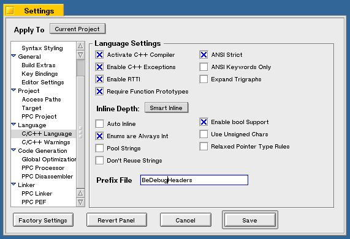
図[4.21] シンボルファイルのアイコンのキャプチャ
以下に、MWDebug-Be.debugの基本的な操作方法について項目ごとに説明します。
■デバッグするアプリケーションの起動
デバッグしようとするアプリケーションのシンボルファイルをダブルクリックすると、MWDebug-Be.debugが起動した後、MWDebug-Be.debugによって自動的にアプリケーションが起動されます(注4-6)。この時、次の三つのウィンドウが開かれます:
・コマンド引数の入力ダイアログ
シェル端末からアプリケーションを起動した時に与える、コマンド引数を入力するためのダイアログです(注4-7)。引数なしのアプリケーションであれば、何も入力せずに“OK”ボタンをクリックして構いません。
・シンボルファイルの内容表示ウィンドウ
アプリケーションのソースファイル名一覧や、各ソースファイルの内容を表示します。ソースコード中の任意の場所にブレークポイントを設定するための機能を提供します。
・プロセス表示ウィンドウ
システムで動作しているプロセスの名前一覧や、各プロセスの状態を表示します。ただし、プロセスの動作制御を行うことはできません。
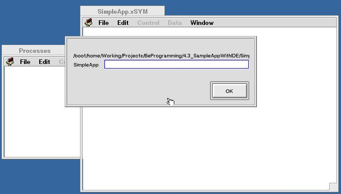
図[4.22] シンボルファイルを開いた直後の画面
図4.22は、シンボルファイルのアイコンをダブルクリックした直後の様子を撮ったものです。最前面に表示されているコマンド引数の入力ダイアログを閉じると、デバッグ用のウィンドウが開かれてアプリケーションが起動します。図4.23は、この様子を撮ったものです。
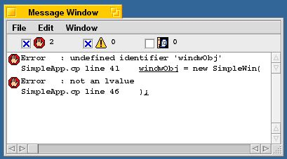
図[4.23] アプリケーションを起動した直後の画面
デバッグ用のウィンドウでは、デバッグ対象となるアプリケーションのスレッドを強制終了したり、またブレークポイントからのステップ実行や関数呼び出しのトレースなど、デバッグのための動作制御機能を提供します。図4.24は、デバッグ用のウィンドウにある動作制御用のボタンについて説明したものです。
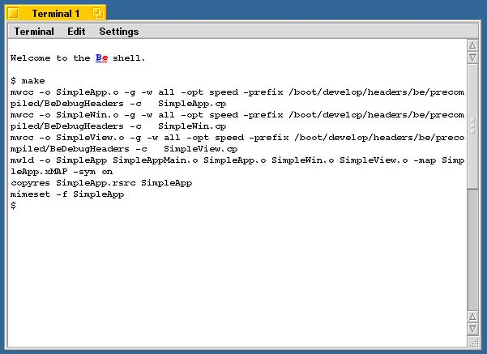
図[4.24] デバッグウィンドウのボタンに関する説明図
アプリケーションを終了した後、もう一度起動し直す場合は、再度シンボルファイルのアイコンをダブルクリックするか、またはシンボルファイルの内容表示ウィンドウで、“Control”メニューから“Run”を選択して下さい。
■ステップ実行
デバッグ中のアプリケーションに対してステップ実行を行わせるには、図4.22のステップボタンを使います。一回のクリックに対し、ソースコードの一つの文(statement)を実行して停止します。ステップ実行をやめて動作を再開するときは、図4.22のランボタンをクリックして下さい。
■関数呼び出しのトレース
デバッグ中のアプリケーションに対して関数呼び出しのトレース動作を行わせるには、図4.22のステップインボタンとステップアウトボタンを使います。関数呼び出しを行っている文を実行するところでステップインボタンをクリックすると、呼び出されている関数内部に移ってステップ実行を開始します。また、関数内部のステップ実行中にステップアウトボタンをクリックすると、その関数の呼び出し元に戻ることができます。
■ブレークポイントの設定と解除
ブレークポイントを設定するには、シンボルファイルの内容表示ウィンドウを使います。デバッグしたいソースファイルをファイル一覧から選択し、ファイル内容を表示した部分の左側にあるバー記号をクリックすると、そこにブレークポイントがセットされて赤いマークが付きます。なお、CodeWarrior for BeOSのコンパイラ(mwcc)では、最適化オプションを指定した状態でデバッグオプションを有効にすることが可能です。このため、使っていない局所変数を宣言した箇所などでは、最適化によってコンパイルの際に無視される行が生じ、ブレークポイントを設定しようとしてもできないことがあります。ブレークポイントを設定可能な行には必ずバー記号がついていますので、これが付いていない場合は、設定できないのが正しい動作です。
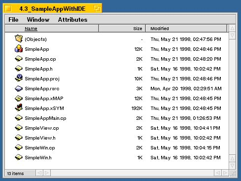
図[4.25] ブレークポイントの設定画面
図4.25のように、ソースファイルを表示する部分の枠にあるボタンをクリックすると、そのファイルで定義されている関数の一覧を表示したポップアップメニューが表示されます。このメニューから関数を選択すると、そこにジャンプしてくれるので便利です。また、デバッグ用のウィンドウには実行箇所のソースファイルの内容が表示されますが、この部分を使ってもブレークポイントを設定できます。操作方法は変わりませんので、トレース実行しながら次々にブレークポイントを設定していく場合に便利でしょう。
設定したブレークポイントを解除するには、ブレークポイントを示す赤いマークをクリックして下さい。設定が解除されると、マークが消えてバー記号が現われます。どこにブレークポイントを設定したか分からなくなった場合は、“Window”メニューから“Show BreakPoints”を選択すると、現在設定しているブレークポイントを一覧表示したウィンドウが開かれます。一覧表示されたブレークポイントのうち、探したいものを選んでダブルクリックすると設定した場所にジャンプしてくれます。
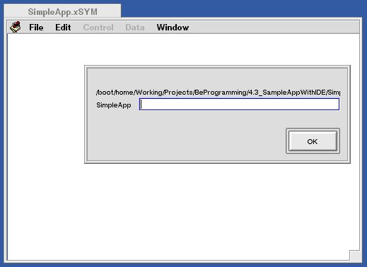
図[4.26] ブレークポイントの一覧表示ウィンドウ
■アプリケーションの強制終了
アプリケーションを強制終了するには、図4.24のキルボタンをクリックして下さい。アプリケーションが終了し、デバッグ用に開かれていたウィンドウが全て閉じられます。
アプリケーションをデバッグする時は、ソースコードの適切な場所にブレークポイントを設定し、アプリケーションの実行を再開させて下さい。実行箇所がブレークポイントに到達すると実行が停止し、デバッグウィンドウにその時点での変数の値が表示されます。あとは、ステップ実行させて変数の値の動きを見守りながら、処理が正しく進んでいるかどうかをチェックすればよいでしょう。
なお、BeOSのアプリケーションはマルチスレッドが基本ですので、デバッガもそれに対応している必要があります。MWDebug-Be.debugでは、スレッドごとにデバッグ用のウィンドウを開いてくれますので、マルチスレッドのアプリケーションをデバッグするのが簡単になっています。試しに、この章の説明で使ったサンプルアプリケーション(SimpleApp)をデバッグオプション付きで作成し、デバッガを起動してみて下さい。SimpleView.cpというソースファイルで定義されているSimpleView::Draw()というメンバ関数の中にブレークポイントを設定して実行させると、二つ目のデバッグ用ウィンドウが開かれるはずです。これは、アプリケーション本体とウィンドウが別のスレッドによって動作しているからなのです。
以上でソースレベルデバッガに関する説明を終わりますが、次の節に移る前に、その他のデバッグ手段を紹介しておきましょう。一つはTerminalを利用したもの、もう一つはシステムログを記録するサーバモジュールを利用したものです。
■printf()を使ったデバッグ
アプリケーションのアイコンをダブルクリックして起動するのではなく、Terminalにコマンド入力してアプリケーションを起動すると、printf()による標準出力への出力がTerminalのウィンドウに表示されます。ウィンドウの再描画にかかわる部分など、デバッガから起動したのでは再現が難しいバグを追跡する場合は、printf()を使ったメッセージ出力文を使って必要な情報を得るようにすると便利です。さらに、プリケーションのシンボルファイル名を引数としてTerminalからソースレベルデバッガ(MWDebug-Be.debug)を起動すると、ソースレベルデバッガを使ってデバッグしながらprintf()によるメッセージ表示を行うことが可能です。
■syslogdを使ったデバッグ
いつエラーが起きるか分からない場合や、また長時間動かしていないと再現しないバグについては、一々デバッガやTerminalから起動して追跡するというわけにはいきません。このような場合、POSIX APIのsyslogユーティリティを使うと、2.3節で紹介したsyslog_daemonに依頼してシステムのログファイルにメッセージを記録できるので便利です。このログファイルは/var/logにある“syslog”という名前のテキストファイルですが、/varディレクトリがTrackerに表示されないため、Terminalを使ってアクセスする必要があるので注意して下さい。BeOSのsyslogユーティリティはPOSIXでの規格と若干異なりますが、詳細はBe社のWebサイトに置かれた技術資料(http://www.be.com/aboutbe/benewsletter/Issue61.html#Insight)などをご覧ください。
さて、次の節でいよいよ本章も終わりです。プログラミングを始める前の準備の最後として、C++言語の解説書の紹介や、本書で採用しているプログラミング作法の説明を行います。もちろん、「C++のことは大体分かってるし、もう待ち切れない!」という人は、次の節をとばしてサンプルコードの解説に進んでもらって構いません。
- (注)4-6
- シンボルファイルを開いたときにアプリケーションを起動するかどうかは、MWDebug-Be.debugのプリファレンス指定で変えることができます。詳しくはCodeWarrior for BeOSのマニュアルを参照して下さい。
- (注)4-7
- この入力ダイアログも、MWDebug-Be.debugのプリファレンス指定により開くかどうかを変えることができます。
4.6 C++でのプログラミング
本書では、読者の方が既に基本的なC++プログラミングの知識をお持ちだということを前提にしていますので、C++でのプログラミングについては特に解説しません。その代わりといってはなんですが、筆者が良いと思ったC++言語の解説書や参考書を紹介します。また、本書の解説で使っているサンプルコードを読まれる際の参考にしていただくために、筆者のプログラミング上の慣習を説明しておきます。4.6.1 C++に関する参考書
以下に、筆者がお勧めの参考書を紹介します。最初の二つはプログラミングの初心者に向けたものです。■C++プログラミング Vol.1, Vol.2
H. M. ダイテル, P. J. ダイテル著、小嶋隆一訳
1997年、(株)プレンティスホール出版
ISBN 4-89471-009-9, 4-89471-024-2
ここで紹介している中で、最もお勧めできる本です。訳もこなれており、そして何より内容が充実しています。本書の第2章で、プログラムを書くにはOS内部の知識もある程度必要だと述べましたが、この本でもそれは意識されています。はじめの方の章でOSの役割やプログラミング言語の処理系について説明するだけでなく、各章末に設けられた練習問題の中にはCPUのシミュレータやコンパイラを自作してみるというものが含まれ、自分の書いたプログラムがどのようにしてコンピュータを動かすのかについて、より深く考えるのを助けてくれます。
■C++実践プログラミング
Steve Oualline著、望月康司監修、谷口功訳
1996年、(株)オライリー・ジャパン
ISBN 4-900900-10-9
若干訳がこなれていないのが惜しいところですが、この本も内容が充実しています。表題にたがわず、市販のコンパイラやmakeユーティリティ、またデバッガの使い方も効果的に説明されているのが目をひきます。
上の二つのうちのどれかを読んでしまえば、本書に収録したサンプルコードを理解するには十分でしょう。もっとお手軽な解説書で済ませてしまっても大丈夫だとは思いますが、本書のサンプルコードを自分向けに大きく改造して使ったり、また自分だけで一からアプリケーションを作るのであれば、上に挙げたようなしっかりした内容の解説書を読んで理解しておくべきです。
次に、C++プログラミングは分かっているから大丈夫、という人にもお勧めできる本を四つ紹介します。
■注解C++リファレンス・マニュアル
M. A. エリス, B. ストラウストラップ著、足立高穂, 小山祐司訳
1992年、(株)トッパン
ISBN 4-8101-8027-1
C++言語の設計者である、B. ストラウストラップ博士自身による注釈付きのマニュアル。ANSI/ISOによるC++の標準化規格は既に決定しましたが、標準策定のための基準文書として使われていたのがこの本です。標準規格そのものは、未だドラフトしか公開されていませんので[2]、C++の言語仕様について疑問が生じた時の参考資料として役立つ本です。たとえば、NULLで初期化された変数にdelete演算子を適用しても何も起きないことが保障されるかどうかといったことは、この本にすべて書かれています。文字どおり、リファレンスマニュアルとして手元に置いておくべき一冊だと思います。なお、この本の正誤表と追加の第19章がインターネット上で公開されていますので[3]、ANSI/ISOのドラフトと合わせて参考するのがよいでしょう。
■C++オブジェクトモデル
S. B. リップマン著、三橋二彩子、佐治信之、原田曄 (あきら)訳
199x年、アジソン ウェスレイ・トッパン
ISBN 4-8101-8101-4
C++の言語処理系内部について解説した本。アプリケーションプログラミングを学ぶ際に、OSの内部について知ることが役立つように、C++の言語処理系の仕組を知ることはC++プログラミングを行うえで役立つことが多いものです。C++でのプログラミング作法や設計について迷いが生じた時は、一度読んでみるとよいでしょう。
■エキスパートCプログラミング --知られざるCの真相
Peter van der Linden著、梅原系訳
1996年、(株)アスキー
ISBN 4-7561-1639-6
この本はC++の解説書ではありません。しかし、読んでみて損はないと思います。たとえばBeOSのような新しいOSを学ぶときに、UNIXという、実績のある一世代前のOSを先に理解しておくと便利なように、C++の親にあたり、また広く使われているC言語がどんなものか知っておくのは悪くないというのが理由の一つです。そして、また何よりもこの本が面白いからです。原著者はSunSoft社のOS開発チームに所属している人だそうで、SunOSの開発にまつわる話しがあちこちに登場します。最後の章ではC++を解説しており、簡潔にまとまっています。「CもC++も十分分かってるから、もういいよ。」と思われる人がいるかも知れませんが、そんな人こそ、この本を楽しんで読めるでしょう。
■C++言語書法 --コード再利用の奥義と実践
M.D. キャロル, M. A. エリス著、小山祐司, 中込知之訳
1996年、(株)トッパン
けっしてお手軽に読める本ではありませんが、一通りC++について学び、またプログラミングの経験を積んだ後で読むのに良い本です。クラス設計の方法論や、バージョン間でのバイナリ互換性を備えたライブラリの構築技法など、プロとして身に付けるべきことについて多く議論されています。
以上の六冊が、筆者の勧めるC++の参考書です。もっと良い本をご存じの方がいらしたら、是非筆者(koga@ftgun.co.jpまたはshkoga@ibm.net)までお知らせ下さい。
4.6.2 本書でのプログラミング作法
次の章から始まるサンプルコードを使った説明の準備として、サンプルコードで使っているプログラミング作法を説明します。以下に挙げるのは、C++プログラミングを行ううえで守る方がよい原則ではなく、むしろ筆者が普段使っているプログラミング上の慣習です。あくまでも本書のサンプルコードを読む際の参考として示しているものであり、一般的に採用すべきプログラミング作法として書いているのでないことを断わっておきます。■ソースファイルの拡張子
本書に収録したサンプルでは、ソースファイルの拡張子はすべて“.cp”にしています。C++のソースファイルに付ける拡張子としては、他に“.cpp”や“.cc”、また“.c++”などがありますが、筆者の習慣上“.cp”で統一しています。また、ファイル名は、ソースファイルを“クラス名.cp”、そしてクラスを定義したインタフェースファイルを“クラス名.h”としています。
■クラス定義の記述作法
ヘッダファイルに記述するクラス定義は、以下のことを原則としています:
・メンバ関数の宣言を先に書き、その後にデータメンバの宣言を書く。
・メンバ関数とデータメンバの宣言では、それぞれ公開(public)メンバを先に書き、その後に限定公開(protected)メンバ、最後に非公開(private)メンバを書く。
・導出クラス(サブクラス)を作ることを予定しているクラスでは、必ずデストラクタをvirtual宣言する。
上に挙げた原則のうち、最後のものはC++の言語仕様上必ず必要なことです。もちろん、すべてのクラスに対してデストラクタのvirtual宣言を行ってもよいのですが、サブクラスを作ることを想定していないクラスとの違いを明確にするために設けている原則です。
■データメンバと大域変数の命名規約
クラスのデータメンバ、および大域変数に対しては、以下の命名規約を用いています:
・静的(static)でない、通常のデータメンバは”f”を名前の頭に付ける。これは、"field"を意味したものである。
・静的データメンバは“s”を頭に付ける。これは、"static"を意味したものである。
・大域変数は、“g”を頭に付ける。これは、"global"を意味したものである。
これら以外の変数、つまり局所変数や関数の仮引数に対しては特に頭文字を付けません。なお、変数名一般に対する規約として次のものを設けています。
・変数名は小文字で始め、また語句をつなげた名前を使う場合は、区切り部分を大文字にする。
例)“theWindow”、“gMainWindow”。
なお、Be社がシステムライブラリに対して適用している命名規約については、Be社から出ているAPIリファレンスの序章に書かれています。Be社の命名規約では、データメンバに関しては小文字で始めること以外特になく、また大域変数に対しては“be_”を頭に付けることになっています。
■メンバ関数および大域関数の呼び出し記法
メンバ関数と大域関数の呼び出しに対しては、以下のことを原則としています:
・静的でない、通常のメンバ関数をクラス内部で呼び出す時は、this変数を明示的に書く。
例)this->Invalidate();
・静的メンバ関数をクラス内部で呼び出す時は、限定名修飾を行わずに書く。
例)myPartner = LooperForThread(theThread);
・大域関数を呼び出す時は、限定名修飾を行って書く。
例)::snooze(10 * 1000);
以上の原則を守ることにより、関数呼び出しの記述を見たときに、呼び出されている関数の種類を判断するのが簡単になります。なお、ANSI規格の標準C関数や、またPOSIX APIの関数の呼び出しに対しては限定名修飾を行いません。これは、それらが良く知られているものであるため、特に修飾を行わなくても分かるからです。また、それらの標準関数と、BeOSのAPIが提供している大域関数とを区別しやすくするという意図もあります。
■局所変数の宣言とスタックオブジェクト
関数や手続き(注4-8)の局所変数は、それが使われるブロックの先頭に宣言をまとめて書くことを原則としています。つまり、その変数を実際に使う場所に来たとき初めて宣言するやり方をとりません。これは、ブロックの先頭でまとめて宣言する方が、そのブロックで使っている局所変数の個数を把握しやすくなり、また長すぎる関数や手続きを書いてしまうのを防ぐ助けになるという筆者の経験から採用しているものです。
なお、クラスの中にはコンストラクタとデストラクタに特別な意味を持たせ、スタックに積まれるオブジェクト、すなわち局所オブジェクトを利用して一時的なロック処理などを行わせるものがあります(注4-9)。このようなクラスを使う場合は例外とし、実際にコンストラクタが呼ばれる必要のある場所で局所変数の宣言を行います。
以上で、本書で使っているプログラミング作法の説明は終わりです。必要な準備がすべて終わりましたので、いよいよ次の章から実際のBeOSプログラミングの解説を始めます。
- (注)4-8
- 本書では、何らかの値を計算して返すことよりは、むしろオブジェクトのデータメンバの値を変えて状態を変更したり、入出力操作を行う「副作用」に重点を置いたC++の関数のことを、「手続き」と呼んでいます。
- (注)4-9
- たとえば、BeOSのSupport Kitで提供されているBAutolockクラスでは、コンストラクタの引数に与えたオブジェクトに対してロックをかけ、デストラクタでそのロックを解除します。これにより、BAutolock型の局所変数を宣言するだけでロックの開始と解除が自動的に行われるだけでなく、例外の発生時にもロックの解除が正しく行われることが保障されます。それによって、ソースコードが簡潔で安全なものになります。
参考文献
[1]「MAKEの達人」C. トンド, A. ネイサンソン, E. ヤント著/小川晃夫訳, 藤井直人監訳, (株)トッパン, 1992
[2] http://www.maths.warwick.ac.uk/cpp/pub/
[3] ftp://ec.tmit.ac.jp/pub/Books/ARM/
Art of BeOS Programming
koga@stprec.co.jp